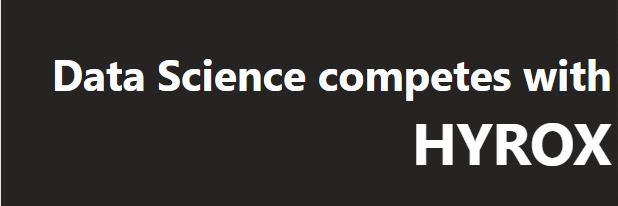

About Me
With 18 years of experience in finance and analytical roles within local government and the police force, I have developed strong skills in data analysis and insights. Currently, I work as an Insight Analyst for a local authority, primarily using Power BI, and I am also learning Python. I have experience with geographical analysis tools like ArcGIS, which complements my work in data science and analytics. To further enhance my knowledge, I am pursuing a BSc in Data Science.
On a personal note, I am married with two wonderful children. I have a deep admiration for bears, finding them both gorgeous and fascinating, however I have yet to embark on a bear related data-science project! My interests extend to fitness, competing, general wellness, healthy eating, and yoga—though I admit, avoiding cakes and chocolate is a challenge that I frequently fail on!
Maths and statistics are my true passions, and I find immense joy in my work. I am enthusiastic about continuously learning and growing in my profession while balancing a fulfilling personal life.
My Portfolio

Hyrox is growing fast, but research around what contributes to success in these races is still limited. My curiosity led me to analyse the performance data of these incredible athletes to uncover what key factors contribute to achieving those impressive sub-one-hour finishes.
Additionally, I aimed to identify which variables can be used to predict a participant's finish time more accurately.
Click the Hyrox icon on the left to begin exploring the analysis and discover the secrets behind Hyrox's top competitors.
This analysis is completed on male finishers, competing in the Pro category.
Feedback and Appreciation

Hayley Public Health Consultant
I just wanted to acknowledge your work on the Boater Survey. The PH team have really enjoyed working with you, bringing to life the numbers, to produce an amazing PowerBI tool to showcase and present the results. It truly is an awesome product and will go some way to further raise awareness about this seldom heard community and get conversations started. Your professional approach, coupled with enthusiasm and a thirst to want to know more have ensured this product is authentic! Thank You!!!

Rhys Service Manager Partnership & Engagement
Thank you, Kiersty. A big, big, thank you for all the amazing work you have done on this [Power BI Dashboard]. We are incredibly grateful and this will be such a valuable tool for the team going forwards.

Shell Insight Analyst
Thank you for your help today with a Power Query Q I had been mulling over! The way you worked through the problem and helped explain the solution was easy to understand and will be reapply-able! Will be sure to add it to our notes area as I think it will definitely have multi-use for us. Thank you!!!!!
Contact Me
Wiltshire, UK
Lets get in touch. Send me a message: